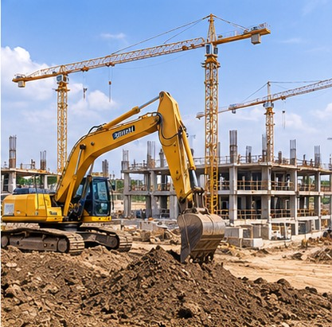
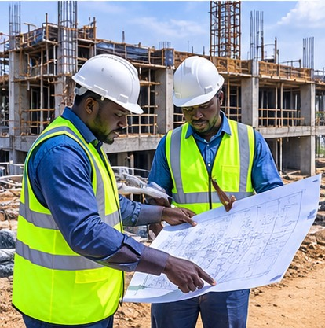
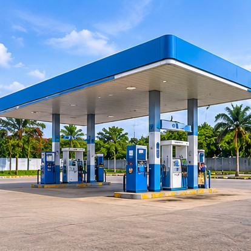
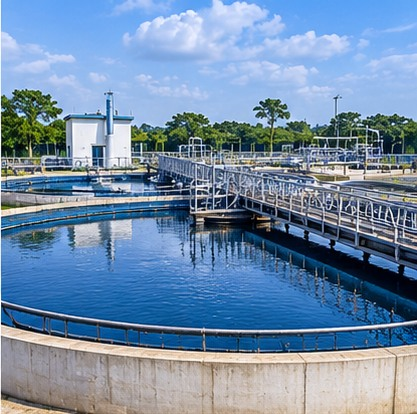
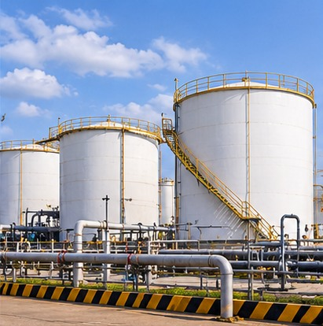

Poor site selection
Investment can move ahead before demand, access, title and development constraints are properly assessed.

We connect engineering design, regulatory thinking and project delivery to help build safer, smarter fuel, water and energy infrastructure.

K Technical clarity.Kaotech Design & Consultancy Limited is an engineering consultancy for critical fuel, water and energy infrastructure.
We bring concept design, technical documentation, regulatory approvals, procurement support, construction supervision, commissioning and digital integration into one practical delivery model.
Infrastructure projects can lose value long before construction begins. We bring site intelligence, engineering judgement and regulatory planning into the conversation early.
Investment can move ahead before demand, access, title and development constraints are properly assessed.
Uncoordinated submissions can create avoidable delays, redesign and uncertainty.
Gaps between design, procurement and site execution can undermine cost, schedule and quality.
Manual processes and disconnected data make it harder to spot losses and emerging issues.
From concept to operation, our services are structured to reduce uncertainty, improve compliance and give owners greater control over delivery.
Concept and detailed design for retail, mega and modular stations, supported by technical documentation and approval coordination.
Storage tank design, P&IDs, pipelines, automation, fire protection, containment and safety systems.
Industrial and commercial treatment systems, pump sizing, automation, environmental documentation and smart sanitation.
Electrical integration, load studies, renewable feasibility, SCADA, PLC/HMI and digital control systems.
Planning, procurement support, construction oversight, quality assurance, testing and commissioning.
Site viability through the Development Readiness Package and real-time fuel visibility through FuelSync.
Our specialist tools extend engineering judgement into earlier investment decisions and stronger day-to-day asset visibility.
FuelSync is being developed to connect, collect, store, analyse and visualise fuel pump and storage tank telemetry through web and mobile dashboards.
Explore FuelSyncEight connected stages give every engagement a clear route from first conversation to handover and ongoing support.
Understand the objectives, site, scope and delivery requirements.
Evaluate technical, site, commercial and regulatory considerations.
Develop coordinated drawings, calculations and documentation.
Coordinate applicable approval pathways and submissions.
Support equipment selection, vendor coordination and procurement.
Monitor execution against approved drawings and quality requirements.
Coordinate verification, commissioning, inspection and handover.
Provide training, post-commissioning support and digital visibility.
Representative project experience across fuel, water and storage infrastructure — with the right technical disciplines connected around each asset.

Fuel infrastructureFull design, regulatory approval, equipment specification and construction supervision for a private oil and gas operator.
View project experience
WaterWater treatment design, pump sizing, automation and commissioning for a manufacturing facility.
View project experience
StorageTank redesign, P&ID development, fire system upgrades and automation integration for a midstream operator.
View project experienceOur leadership combines technical depth, project execution and an understanding of the realities of delivering infrastructure across the UK and Africa.
An EICA engineering and infrastructure delivery leader with more than a decade of experience across the UK and Africa.
His experience spans instrumentation and control systems, modular station deployment, procurement, SCADA and flow control, water quality, EPC delivery and digital energy solutions. At Kaotech, he provides strategic direction, client leadership and technical oversight, including the development of FuelSync.
Our principles shape how we design, communicate, deliver and build relationships that last beyond handover.
Robust, practical and technically sound decisions supported by evidence, calculation and review.
Safety and regulatory alignment are foundational to design and delivery.
Digital tools, automation and monitoring are used where they strengthen asset performance.
Clear documentation, honest assessments and open communication with clients and regulators.
Solutions shaped around the client's site, priorities, budget and long-term operation.
Consideration for soil, groundwater, communities and resource-efficient systems.
Bring us in early. We can help assess the opportunity, define the engineering scope, navigate approvals and build a delivery path around confidence.